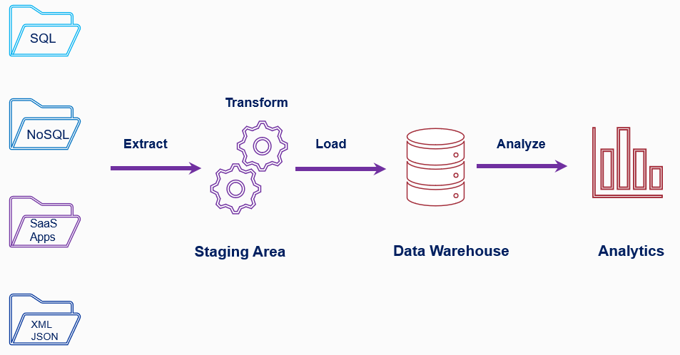
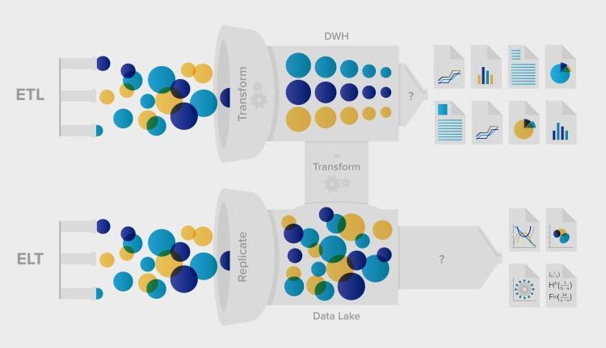
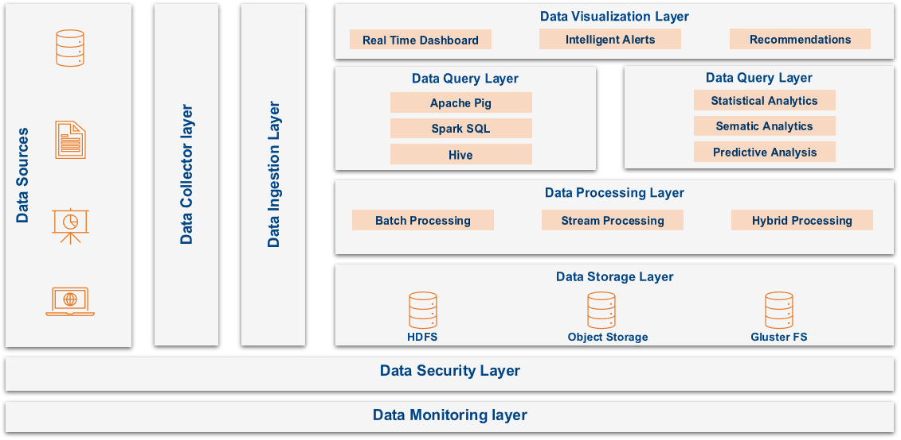
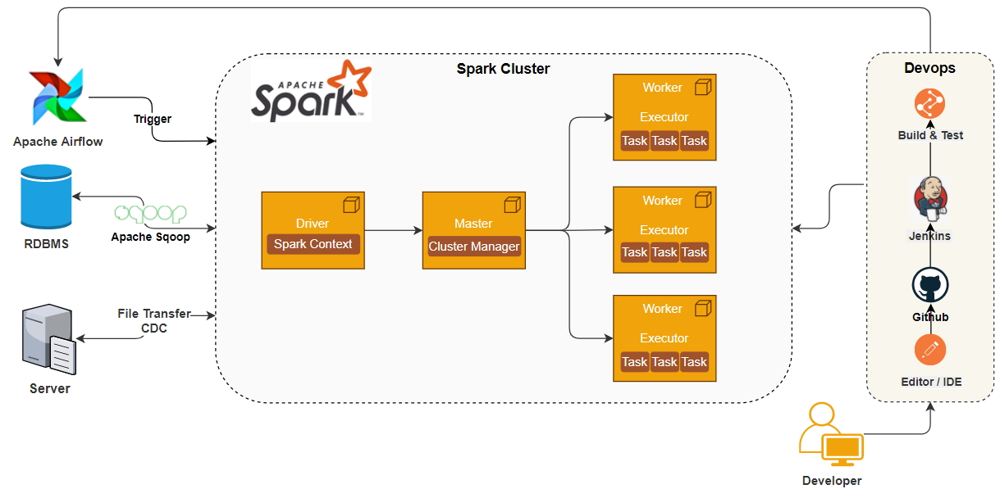
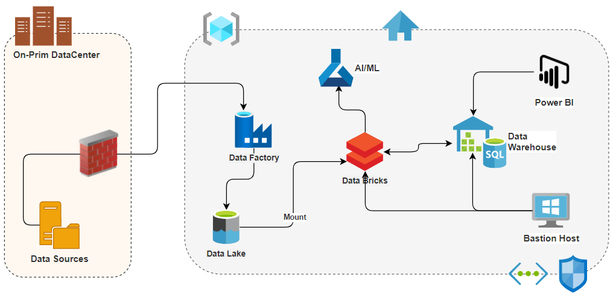
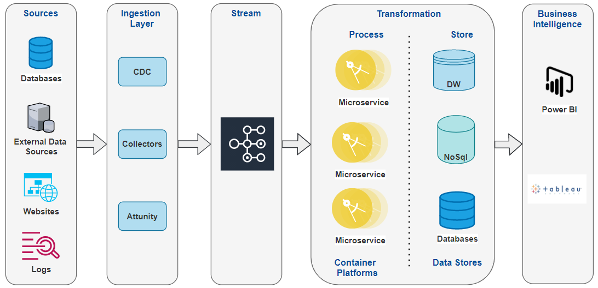
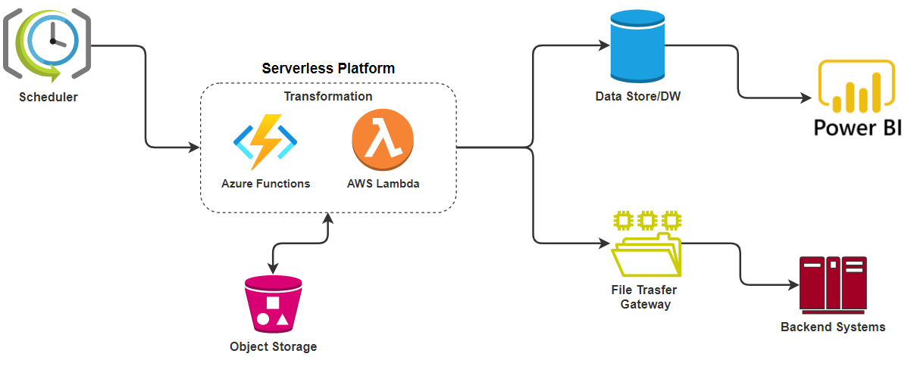
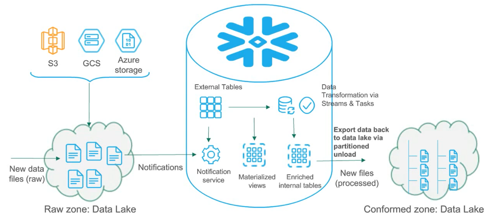

Modernize Your ETL Processes To Unleash Better Business Intelligence
In this article, we’ll be talking about the ETL process (Extract, Transform & Load), the need to modernize ETL tools/platforms, and embarking on their modernization journey.
With the exponential growth in the enterprise’s data landscape, traditional ETL tools are not able to handle the volume and complexity of today’s data.
ETL modernization can help us to overcome these limitations, but there is no straightforward approach for converting and migrating these legacy ETL workloads to new methods such as Apache Spark and microservices-based processing frameworks.
Challenges With Traditional ETL Tools
As we know that traditional ETL tools are being widely used for various ETL use-cases across organizations. And with ETL tools, business processes are often implemented in a highly stifled manner, resulting in a highly abstracted monolith and the certain risk of getting under-performing results, as the volume and quality of data change in the long term.
Also, ETL tools support only batch processing, structure & semi-structured data, lacking efficient metadata management & compliance needs, and license cost & vendor lock-in are always there.
Before jumping into ETL modernization approaches, let’s do a quick walk through the ETL process…
ETL Overview
Today, many organizations understand the value of storing and managing their data to optimize their performance and remain competitive in their market space. Most businesses have a large volume of data but organizing that data for easy access and driving business insights is always a challenge that requires more than just storing data in a data warehouse.
This is where we have ETL tools…

ETL Process
The importance of ETL in an organization is in direct proportion to how much the organization relies on data warehousing. ETL tools collect, read, and transform data followed by loading that data into a data store, or data warehouse for easy access. ETL Tools help us with Processing the data to make it meaningful. Finally, we can use this data to provide business intelligence using graphical interfaces.
These ETL tools were designed for a low volume of data and processes and don’t meet the modern data landscape requirement.
Having said that, Traditional ETL tools are also catching up with handling semi-structured and unstructured data and providing business intelligence in real-time. They are coming up with an ELT implementation concept which is the extract, load, and then transform, which is very similar to the Big data pipeline.

Image Courtesy xplenty.com
How ETL Modernization Can Help In Solving These Challenges?
Let’s see how ETL modernization can help us in solving these challenges and what benefits we can get out of them.
ETL Modernization…
- Support for batch and real-time processing
- Low-cost datalake storage.
- Rapid development to build complex transformation tasks
- Parallel processing leads to reduced time.
- Supports structured, semi-structured data, and unstructured data.
- Support for streaming and data science tasks.
Let’s do a quick walk-through of the various ETL modernization approaches…
Big Data Pipeline Using Apache Spark / Azure Databricks
Before we jump into the Bigdata pipeline approach, let’s do a quick overview of Bigdata and Apache Spark…
Big data
is a term that describes the large volume of data — both structured and unstructured — that inundates a business on a day-to-day basis. But it’s not the amount of data that’s important. It’s what organizations do with the data that matters.
The below diagram depicts the high-level scenario for the Bigdata pipeline…

Bigdata Pipeline
Apache Spark
is a unified analytics engine for large-scale data processing. It provides high-level APIs in Scala, Java, Python, and R, and an optimized engine that supports general computation graphs for data analysis. It also supports a rich set of higher-level tools, MLlib for machine learning, and Structured Streaming for stream processing.
In this approach, the ingestion layer ingests the data to native Data-Lake/Hadoop and Spark with Scala jobs reads the data, applies transformations, and stores the data into DB or Hive file system for analytics. Spark uses in-memory processing with its Driver/executor architecture to have the best optimal performance.
The below diagram depicts ETL modernization using Apache Spark Cluster…

Spark Cluster
Similarly, we can use the Azure Databricks service (managed spark cluster) to do the ETL modernization.
Azure Databricks
is a fast, easy, and collaborative Apache Spark-based big data analytics service designed for data science and data engineering. Azure Databricks provides the latest versions of Apache Spark and allows you to seamlessly integrate with open source libraries. Clusters are set up, configured, and fine-tuned to ensure reliability and performance without the need for monitoring.
Sources - azure.databricks.com
The below diagram depicts ETL modernization using Azure Databricks…

Using Databricks Cluster
Using Container & Serverless Platforms (Kubernetes/AWS Lambda/Azure Functions)
Let’s do a quick overview of the Container & Serverless Platforms…
Kubernetes
is an open-source container-orchestration system for automating computer application deployment, scaling, and management.
In this approach, Raw data can be ingested using CDC tools, and microservices deployed on the Kubernetes cluster can handle the transformation part. Kafka streams can take care of intermittent persistence & maintaining the job states, transformed data can be persisted to data stores and finally consumed by Business Intelligence tools for analytics purposes.
The below diagram depicts ETL modernization using container platforms…

Using Container Platforms
AWS Lambda/Azure Functions
, available in the public cloud, are the event-driven, compute-on-demand experience that extends the existing application platform with capabilities to implement code triggered by events occurring in third-party services as well as on-premises systems.
In this approach, serverless functions can be used to handle the transformation part, object storage for intermittent persistence, and the scheduler to maintain the job states. This approach is recommended only for short duration & low complexity ETL jobs.
The below diagram depicts ETL modernization using serverless functions…

Using Serverless Platforms
Using the “Streams & Tasks” Feature In Snowflake Data-warehouse
Streams & Tasks
feature in Snowflake provides the ETL engine. Tasks in Snowflake provide the control over your procedures to execute them in the order you want them to run. For a one-time load, just kick off the master task job and it runs in a chain reaction in the way you have set them up. But for delta loads that are running daily, you want to run your tasks and job as soon as you receive them.
Sources - snowflake.com
Streams & Tasks feature can help us with these scenarios. This approach is more suitable for the workloads in process of migration to the Snowflake platform.

Image Courtesy snowflake.com
Conclusion
ETL modernization
is becoming a key strategy for an organization’s IT ecosystem to reimagine its business processes and integrate with external systems in a real-time, more flexible, and scalable manner.
Having said that, I also want to put a disclaimer here that it’s not advisable to modernize every ETL use case, we should do a proper assessment and triaging to decide upon the ETL Modernization aspect. Even upcoming versions of ETL tools are also catching up with handling semi-structured and unstructured data and providing business intelligence in real-time.
The right ETL modernization strategy aligned to the enterprise’s digital strategy, the IT systems rationalization roadmap, an implementation framework, and execution approach with aptly skilled resources can be the key success factors of the ETL modernization journey.
Do let me know what do you think about ETL Modernization?
Thanks for reading !!!